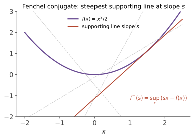

本页目录
凸优化 I · 共轭函数与 Fenchel 对偶
对标：Boyd & Vandenberghe §3.3、§5 / Rockafellar 入门 ｜ 前置：本科优化 I–III、泛函 II 研究生凸优化的第一件新武器是共轭函数（Legendre–Fenchel 变换）：它把"函数"编码成"支撑超平面族"，是对偶理论的原子操作——本科的 Lagrange 对偶、后两页的近端算法与 ADMM，全部由它统一生成。
学习层：一条支撑线何时把不等式压成等号？
1. 具体情境：斜率 \(y\) 在向函数“报价”
Fenchel 共轭
问的是：固定斜率 \(y\) 后，仿射函数 \(\langle y,x\rangle-f^*(y)\) 能在多高的位置仍不穿过 \(f\) 的图像。于是
不是一个抽象口号，而是一张可核对的“支撑间隙”账单；间隙为零恰好表示 \(y\in\partial f(x)\)。
2. 先预测：定义域也是答案的一部分
- 对 \(f(x)=x^2/2\)，给定 \(x\) 后哪一个 \(y\) 会让 Fenchel–Young 间隙为零？
- 对 \(f(x)=|x|\)，当 \(|y|>1\) 时，共轭应是一个很大的有限数，还是 \(+\infty\)？
- “负熵的共轭是 log-sum-exp”是否无需说明 \(p_i\geq0\) 与 \(\sum_i p_i=1\)？
3. 三个模型：光滑、折角与未取到的上确界
无 JavaScript 时的静态读法：
| \(f\) | \(f^*\) | 取等条件 | 边界 |
|---|---|---|---|
| \(x^2/2\) | \(y^2/2\) | \(y=x\) | 处处有限且光滑 |
| ( | x | ) | \(\iota_{[-1,1]}(y)\) |
| \(e^x\) | \(y\ln y-y\)（\(y>0\)），\(0\)（\(y=0\)） | \(y=e^x>0\) | \(y=0\) 的上确界在 \(x\to-\infty\) 时逼近但不取到；\(y<0\) 时为 \(+\infty\) |
实验揭示后可切换函数并移动 \(x,y\)，SVG 同时画函数、候选支撑线和接触点；账本分开显示共轭值、Fenchel–Young 间隙、次梯度证书与定义域状态。离散画布只负责可视化，精确共轭由上表的解析式计算。
4. 从一个间隙到原始–对偶间隙
Fenchel–Rockafellar 对偶把两个这样的上确界拼起来。弱对偶不需要约束品性；零原始–对偶间隙与对偶解取得则需要闭凸性和相对内部相交等条件。有限实验出现“数值间隙接近零”不能替代强对偶定理，也不能证明最优解一定取得。
熵例尤其要写全定义域：
而
少写一个单纯形约束，就会把两个不同的共轭混成一条。
1. 共轭函数

定义 \(f: \mathbb{R}^n \to (-\infty, +\infty]\)（允许 \(+\infty\)——约束以"示性函数"进目标的现代记法）：
几何读法：\(f^*(y)\) = 斜率为 \(y\) 的直线族里"恰好托住 \(f\) 图像"所需的截距修正——\(f^*\) 记录了 \(f\) 的全部支撑超平面（本科优化 I 支撑超平面定理的函数化）。\(f^*\) 恒凸（逐点 sup 保凸——即使 \(f\) 不凸）。
必会共轭对照表（各一两行推导，动笔过一遍）：
| \(f(x)\) | \(f^*(y)\) |
|---|---|
| \(\frac12\|x\|_2^2\) | \(\frac12\|y\|_2^2\)（自共轭，唯一） |
| \(\frac1p\lvert x\rvert^p\) | \(\frac1q\lvert y\rvert^q\)（\(\frac1p + \frac1q = 1\)——Hölder 共轭指数的出处！） |
| \(e^x\) | \(y\ln y-y\)（\(y>0\)），\(0\)（\(y=0\)），\(+\infty\)（\(y<0\)） |
| \(\sum x_i\ln x_i+\iota_{\mathbb R_+^n}(x)\) | \(\sum_i e^{y_i-1}\) |
| \(\sum p_i\ln p_i+\iota_\Delta(p)\)，\(\Delta=\{p\geq0:\sum p_i=1\}\) | \(\ln\sum e^{y_i}\)（单纯形负熵与 log-sum-exp 互为共轭） |
| 示性函数 \(\iota_C\) | 支撑函数 \(\sigma_C(y) = \sup_{x\in C}\langle y,x\rangle\) |
| 范数 \(\lVert x\rVert\) | 对偶范数单位球的示性函数 |
Fenchel–Young 不等式（定义的直接重排）：\(f(x) + f^*(y) \geq \langle x, y\rangle\)，取等 \(\iff y \in \partial f(x)\)——"共轭对 = 次梯度关系"：\((x, y)\) 配对当且仅当 \(y\) 是 \(x\) 处的支撑斜率。
定理（双共轭） \(f\) 真（proper）、闭且凸（下半连续 + 凸）\(\Rightarrow f^{**} = f\)。 【骨架】 \(f^{**} \leq f\) 由定义两次展开；反向：闭凸函数是其全部支撑超平面的上确界（分离超平面定理应用于上镜图 epigraph——凸分析的中心构造），而 \(f^{**}\) 恰好就是这个上确界。\(\blacksquare\) 读法：真闭凸函数与其支撑面族信息等价——"点描述"与"斜率描述"可以无损互换。对具有仿射下界、且双共轭不退化的一般扩展实值函数，\(f^{**}\) 是不超过 \(f\) 的最大下半连续凸函数（常称闭凸包络）；只说“凸包络”会漏掉闭性，忽略 properness 则会把恒为 \(+\infty\) 等退化对象也错误纳入同一句话。
2. Fenchel 对偶
定理（Fenchel–Rockafellar） 原问题 \(\min_x f(x) + g(Ax)\) 的对偶为
弱对偶恒成立；\(f, g\) 闭凸 + 约束品性（如 \(A\,\mathrm{dom}f\) 与 \(\mathrm{dom}g\) 相对内部相交——Slater 的共轭版）下强对偶。 【骨架】 引入拆分变量 \(z = Ax\) 与拉格朗日乘子 \(y\)，对 \(x, z\) 分别取 inf——两个 inf 各自产出一个共轭函数（\(\inf_x [f(x) - \langle A^\top y, x\rangle] = -f^*(A^\top y)\) 正是定义）。\(\blacksquare\)
统一性检阅：LP 对偶（\(f, g\) 取线性 + 示性）、Lagrange 对偶（一般约束的示性化）、SVM 对偶（hinge 与范数各自共轭——本科 ai 课 02 的推导本质是查上面那张表）、熵与 log-sum-exp 的对偶 = 最大熵与指数族的对偶（信息论 III 的拉格朗日推导的抽象真身）——一张变换表统一四门课的对偶，这就是共轭语言的购买力。
3. 次梯度演算（研究生版补全）
本科优化 I 定义了次梯度；共轭语言配齐运算律：\(\partial(f + g) = \partial f + \partial g\)（Moreau–Rockafellar，需约束品性【引用】）；\(\partial(g\circ A) = A^\top\partial g(Ax)\)；最优性条件的对偶形式：\(0 \in \partial f(x^*) \iff x^* \in \partial f^*(0)\)——原始解与对偶解通过次微分互为反函数（Fenchel–Young 取等的两读）。
4. 练习与要点
例 1（共轭亲算） 推 \(f = \max(0, 1-x)\)（hinge）：分段讨论 sup 得 \(f^*(y) = y\) 于 \(y \in [-1, 0]\)、否则 \(+\infty\)——SVM 对偶变量的盒约束 \(0 \leq \alpha \leq C\) 的出处（对照本科 ai 课 02 的结果——那里的"神奇盒约束"原来是 hinge 的共轭定义域）。
例 2（不等式一行造） Fenchel–Young 用于 \(\frac1p|x|^p\) 对：得 Young 不等式 \(xy \leq \frac{x^p}{p} + \frac{y^q}{q}\)——实变 III Hölder 证明的那块砖，出厂车间在此。
例 3（松弛的语义） 对一个明确给定定义域的非凸函数，\(f^{**}\) 给出它的闭凸包络，因此提供系统的凸下松弛；定义域改变，包络也会改变。分类里的 hinge 损失是常用的凸上界替代，但它不是未经说明定义域的 0-1 损失的双共轭。二者都体现凸化思想，却不能画等号。\(\blacksquare\)
下一页：一阶方法的收敛性证明——梯度下降、Nesterov 加速与近端梯度：本科"收敛速率表"逐行兑付。